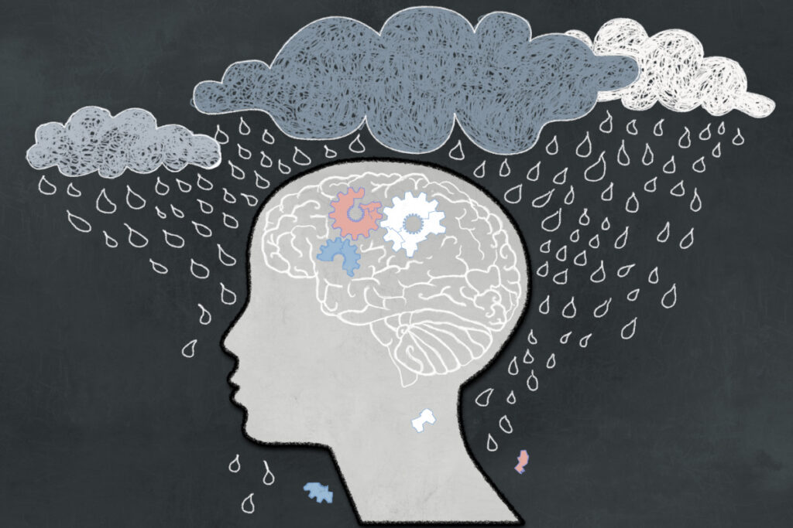
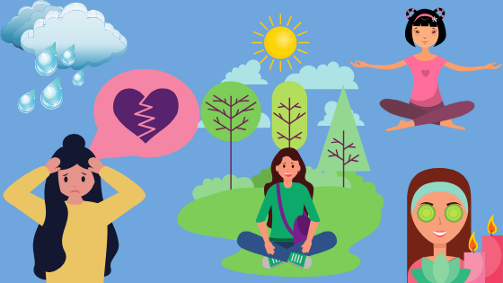

La depresión es un trastorno mental caracterizado fundamentalmente por un bajo estado de ánimo y sentimientos de tristeza, asociados a alteraciones del comportamiento, del grado de actividad y del pensamiento.

Síntomas
Si bien la depresión puede producirse solamente una vez en la vida; por lo general, las personas tienen varios episodios de depresión. Durante estos episodios, los síntomas se producen durante gran parte del día, casi todos los días y pueden consistir en:
- Sentimientos de tristeza, ganas de llorar, vacío o desesperanza
- Arrebatos de enojo, irritabilidad o frustración, incluso por asuntos de poca importancia
- Pérdida de interés o placer por la mayoría de las actividades habituales o todas, como las relaciones sexuales, los pasatiempos o los deportes
- Alteraciones del sueńo, como insomnio o dormir demasiado
- Cansancio y falta de energía, por lo que incluso las tareas pequeńas requieren un esfuerzo mayor
- Falta de apetito y adelgazamiento, o más antojos de comida y aumento de peso
- Ansiedad, agitación o inquietud
- Lentitud para razonar, hablar y hacer movimientos corporales
- Sentimientos de inutilidad o culpa, fijaci&ion;n en fracasos del pasado o autorreproches
- Dificultad para pensar, concentrarse, tomar decisiones y recordar cosas
- Pensamientos frecuentes o recurrentes sobre la muerte, pensamientos suicidas, intentos suicidas o suicidio
- Problemas físicos inexplicables, como dolor de espalda o de cabeza

Para muchas personas con depresión, los síntomas suelen ser lo suficientemente graves para causar problemas evidentes en las actividades cotidianas, como el trabajo, la escuela, las actividades sociales o las relaciones con otras personas. Algunas personas pueden sentirse infelices o tristes en general sin saber realmente porqué.
Causas
- Causas ambientales de la Depresión
- La pérdida de un ser querido o duelo.
- Problemas laborales.
- Problemas económicos.
- Rupturas sentimentales.
- Enfermedades propias o de familiares.
- La vejez es una etapa de la vida especialmente vulnerable.
- Causas temperamentales de la Depresión
Como ocurre con otros trastornos psiquiátricos, los acontecimientos adversos durante la infancia constituyen un importante factor de riesgo de desarrollar una depresión o un Trastorno depresivo mayor. Esto sucede con mayor frecuencia cuando los acontecimientos adversos son múltiples y son experiencias negativas de distintos tipos. Es especialmente relevante en este caso las situaciones de abuso infantil o ambientes de violencia familiar.
También es habitual identificar acontecimientos vitales estresantes como precipitantes de los episodios depresivos. Sin embargo, la presencia o ausencia de estos acontecimientos estresantes identificados no predicen la mejor o peor respuesta a los distintos tratamientos ni el pronóstico.
Se ha establecido que el temperamento neurótico o neuroticismo predispone a la depresión. También se ha podido comprobar que las personas con rasgos neuróticos de personalidad tienen más riesgo de desarrollar depresión en respuesta a acontecimientos vitales estresantes. El neuroticismo es un rasgo de la personalidad, que define personas inestables e inseguras emocionalmente. Suelen ser también personas ansiosas, que viven en un estado continuo de tensión y preocupación, que tienen tendencia a sentir culpabilidad.
La personalidad depresiva también predispone a padecer episodios depresivos y Distimia. Las personas con personalidad depresiva son melancólicas, pesimistas y con problemas de autoestima.
Maneras para combatir la depresión

- Tratamiento y seguimiento
- Actividad física
- Alimentación
- Escribe un diario de gratitud
- Proponte pequeńos objetivos
Es fundamental romper el tabú que suponen las enfermedades mentales y consultar a un profesional a la mayor brevedad posible y con la misma naturalidad que cualquier otro padecimiento de la vida diaria. Es importante tener siempre presente que como muchas otras enfermedades, tiene sus síntomas, su tratamiento, su proceso de recuperación y finalmente su cura, y no hay que desesperarse por tratar de llegar al final lo antes posible.
Existen muchas maneras de afrontar la depresión desde el punto de vista de la psicología, siendo muy variadas las terapias usadas por los profesionales para combatir esta enfermedad. Por su parte, los psiquiatras recetan diferentes fármacos que ayudan a su tratamiento.
Por ello, lo primero es ponerse en manos de un psicólogo o psiquiatra que valore la conveniencia de un tratamiento conductual y/o farmacológico específico para esa clase de depresión. Con él nos ayudarán a modificar tanto los sesgos cognitivos como las alteraciones bioquímicas presentes.
Mi consejo en estos casos es que busques a alguien que, además de contar con la formación adecuada, te ofrezca la confianza suficiente para hablar sin tapujos de todo lo que sientes y piensas. Atreverse a pedir ayuda es fundamental, pues la depresión es una enfermedad y por tanto debe ser convenientemente tratada, pero además tú puedes hacer muchas cosas para mejorar el pronóstico y reducir las probabilidades de que la depresión se cronifique.
El ejercicio es una de las más eficaces, pues se ha descubierto que incrementa la formación de neuronas, mejora la respuesta al estrés, que es factor de riesgo para la depresión, y sube nuestro ánimo.
Practicarlo tan solo 15 minutos al día ya tiene importantes beneficios. Si crees que esto te resultará complicado, puedes probar a aumentar el tiempo de paseo, pues también se ha comprobado su efecto protector frente a la depresión.
Por su parte una alimentación muy rica en vegetales y pescado ha mostrado reducir la inflamación cerebral y favorecer la producción de neurotransmisores, ambas cuestiones clave en algunas clases de depresión. Incluso algunos nutrientes y suplementos naturales, como la vitamina B9 y el omega 3, son capaces por sí solos de mejorar los síntomas de algunos tipos de depresión, pero si quieres tratar naturalmente la depresión deberás contactar con un profesional que valore individualmente tu caso.
Dedica al menos 5 minutos al día a pensar y escribir con detalle sobre 3 hechos, o más, que puedas agradecer. No tienen que ser grandes acontecimientos, incluso lo más simple nos puede ayudar, veamos varios ejemplos:
“Qué agradable es la tendera que me dijo….”; “Qué rico me supo el plátano, estaba tan dulce y suave”; “Qué bien que hoy cuando llamé a mamá pudimos hablar un buen rato”, etc.
Se ha constado que escribir un diario de gratitud mejora significativamente nuestra atención hacia los acontecimientos positivos, lo que resulta muy útil en depresión.
Para ello debe definirse una actividad y unos horarios para la misma, pues eso nos facilitará que se convierta en hábito.
Respecto al tipo de “metas” dependerá de los gustos de cada paciente y del grado de depresión que padezca. Para unos volver a ducharse con regularidad o pasear, sezá todo un logro del que sentirse orgullosos, mientras que para otros puede ser más eficaz obligarse a practicar diariamente antiguas aficiones.
Se sabe que, con constancia, retomar viejos hábitos placenteros ayuda a recuperar la alegráa que nos inspiraban, mejorando la depresión.
| Para más información pulsa aqui |